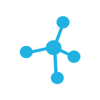

1. BEFRAGUNG
Die Bedürfnisse, Ansichten und Interessen des Unternehmens und deren Mitarbeitende werden eruiert. Kombiniert mit unserer Erfahrung werden diese zu konkreten und passenden Vorgaben definiert. Folgend werden diverse Parameter bestimmt, um im weiteren Prozess optimale Ergebnisse sicherzustellen.
2. Engagement Kick-Off
Interessierte Mitarbeitende stehen (z.B.
für
ein gesellschaftliches Engagement) zur Verfügung und werden aktiv in den Prozess mit einbezogen.
3. Analyse + Matching
Mit Hilfe der Matching-Plattform durchlaufen die Mitarbeitenden online den Matching-Prozess. Das Ergebnis ist eine passgenaue Vorauswahl von möglichen CSR-/
Mentoring-Projekten, die im Vorfeld individuell für das Unternehmen identifiziert und ausgewählt wurden.
4. Interview + Entscheidung
Ergänzt durch ein strukturiertes, persönlich geführtes Interview findet eine vertiefende Analyse der Ergebnisse statt. Eine stabile Grundlage für die Entscheidung zu Gunsten eines konkreten CSR-/
Mentoring-Projektes ist geschaffen.
5. Projektorganisation

Es wird eine konkrete Projektplanung mit den Mitarbeitenden durchgeführt. Neben einem detaillierten Ablauf werden vorbereitende Informationen, sowie alle weiteren notwendigen Maßnahmen individuell entwickelt und den Mitarbeitenden bereitgestellt.
6. Beratung + Coaching
Die Mitarbeitenden werden von CSR MATCH während des CSR-/
Mentoring-Projekts begleitet. Die persönlichen Bedürfnisse der Mitarbeitenden stehen hier im Vordergrund und werden mit Sorgfalt berücksichtigt, um maximale Effizienz und schließlich einen allgemeinen Erfolg zu garantieren.